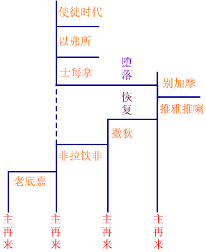

|
����七个教会的总论 ����七种教会 ����这两章所论的七个教会，乃是当时实在有的教会，其情形也是当时各教会实际的情形。但同时，这七个教会也是代表教会的七个时代，其情形也是各时代教会的普遍情形。然而这并非是绝对性的，不过是说使徒后的教会更像以弗所，第二代的教会情形更像士每拿而已。同时，使徒后教会情形也是兼有其余六教会的情形。 ����七个使者 ����这封信都是写给使者，我们已查考过使者是何人，但愿主兴起我们能作使者。虽然这封信都是写给使者，然而也是对教会说的，所以与每一个信徒均有关。 ����七种自称 ����我们的主在这封信里都有论到他自己的话，并且所说的是与各教会的情形相配合。例如，以弗所是失去起初爱心的教会，所以主显明他自己为那位在金灯台中行走的；士每拿是受苦的教会，主表明他自己是死而复活者，使他们愿意殉道；别迦摩是属性的教会，所以主对他们显为有两刃利剑者，可以将世界剖开；推雅推喇是个腐败淫乱的教会，所以主显为目如火焰，脚像光明铜的，执行鉴察和审判；撒狄是一个死的教会，所以主显为有生命的灵和亮光的星；非拉铁非是忠心持守真道的教会，故主显为圣洁真实者，为他们开了宽大工作的门；老底嘉是充满人意的教会，故主显为万有之上的元首。 ����七教会地名的意义 ����以弗所的字义就是「放松」，或「可羡慕的」，这是他们爱心的光景；士每拿的字义就是「没药」，所以是「苦」的意思，这是罗马帝国逼迫教会的时代；别迦摩的字义就是「高楼」、「结婚」或「联结」，此时罗马皇帝康士坦丁入教，教会在世界有了地位；推雅推喇的字义是「献祭不倦」，这是罗马天主教时代，祭司或神甫兴起，拜偶像的事发生，可谓是教会最黑暗、最腐败的时代；撒狄的字义就是「恢复」或「余数」，这是教会复原的时候，然而灵性光景仍不免柔弱知死；非拉铁非就是「弟兄相爱」的意思，在一百多年前在教会复兴时，就有少数基督徒脱离宗派，以爱心互相联络，专心遵守圣经中的真道；老底嘉的字义就是「众人的意见」，这是现今教会人意充满的光景。 ����七个知道 ����这封信都有「我知道」三字，我们的行为无论善恶，主都知道。对于善的，主就尽力赞美，对于坏的，主就严正责备，这都是主凭公义审判的先声。 ����七种劝告 ����各教会既各有特别情形，主就按各等的情形劝告他们。主对各教会劝告的话记在第二、三章；对以弗所(二4-5)，对士每拿(二10)，对别迦摩(二14-16)，对推雅推喇(二20-25)，对撒狄(三2-3)，对非拉铁非(三11)，对老底嘉(三17-20)。 ����七个应许 ����主在各教会中都要兴起得胜者，以维持他的见证，因此他就赐给他们特别的应许，其应许分别列于下：二章七节二章十至十一节，二章十七节，二章廿六至廿八节，三章五节，三章十二节，三章廿一节。 ����七次呼召 ����这封信都有「圣灵向众教会所说的话，凡有耳的就应当听」的话(二7、11、17、29，三6、13、22)，这七封信是主亲自说的，何以竟说是圣灵向众教会说的呢？因主是直接对约翰说，而众教会则只能读约翰所写的信而已，故读时应有圣灵的感动才能明白；还有一点就是，主在世时并没有凭自己说话，都是藉圣灵而说的，如今主仍是藉圣灵说话，故说是圣灵向众教会说的。这七封信都是以主为起头，而结束都是得胜者的呼召。 ����现在我们要详细地来看这封信的内容。 ����在以弗所的教会（二1-7） ����二章一节：「你要写信。」 ����约翰是主的书记，把主的话记录下来。 ����「以弗所教会」，或译作「在以弗所的教会」，教会分两方面：一是奥秘的教会，另一是地方的教会。一是基督的身体，另一则是神的家。这两章所说的教会就是属于地方性的教会，「在以弗所的教会」与「以弗所的教会」是有分别的，因教会不过是寄居在以弗所而并不是属于以弗所，所以「罗马天主教会」、「希腊正统教会」、「中华基督教会」这些名称都不合圣经。 ����以弗所教会是预言使徒以后第一段教会的情形。在主后九十六年之前是使徒的时代。九十六年以后，起首不像使徒的时代了。有许多不对的东西，慢慢开始爬进来了。「以弗所」在希腊文里原是「可羡慕」的意思。因这个教会继续在使徒的教会之后，仍是可羡慕的。 ����「使者」――这封信是给使者的，与保罗所写的以弗所书比较是有顶多差别的，因保罗所写的是给所有信徒，然而到了使徒时代末期，因着当日的信徒多已离世或退后，现在只剩使者能接受这封信了。再将两封信内容比较，就更可知教会情形已前后大不相同，以弗所真是「放松」，已经退后和荒凉了。 ����主对这教会自表为「那右手拿着七星，在七个金灯台中间行走的」，要叫在以弗所的教会和使者知道，主有全权并且是鉴察全教会的。 ����二章二至三节：「我知道你的行为、劳碌、忍耐，也知道你不能容忍恶人，你也曾试验那自称为使徒却不是使徒的，看出他们是假的来。你也能忍耐，曾为我的名劳苦，并不乏倦。」 ����这段是主称赞的话，这段称赞分三方面： ����(一)对他们的本身：1.行为，可见他们的行为必定是顶好的。2.劳碌，即竭力工作。3.忍耐，在教会中真有父母的心，担当别人的软弱。 ����(二)对管理教会：1.不容忍恶人(林前五)，2.不随便接纳人作工，就是使徒还当试验，可见他们是顶有属灵眼光的。 ����(三)对外面工作：即为主名忍耐不倦。由上看来，以弗所教会好像是顶完全的。 ����二章四节：「然而有一件事我要责备你(原文应作：然而我反对你)：就是你把起初的爱心离弃了。」 ����以弗所教会虽然这样好，然而主还有责备，就是起初爱心的失去。我们或者要希奇，一个劳碌作工的教会，岂不是里面也顶爱主吗？但许多经历告诉我们：外面可以劳碌而里面却已离弃起初的爱。一件事叫我自己最惧怕的，就是常常在我们的工作上忘记了主。 ����「起初」这字的希腊文不只是指着时间上的第一，也是性质上的第一，路加福音十五章里，父亲把上好的袍子给浪子穿，那「上好」就是同一个字。并且，在圣经别处经常译作「最」、「第一」。「起初的爱」就是最上好、最完全的爱。是圣徒因着爱所献给主童贞的情爱。 ����「一件事」是在原文里所没有的，「责备」还是译作「反对」好。我们若以为主不过就是在这一件事上反对他们，就好像以为主所反对他们的并不甚重大；其实不然，主是大大忧伤。一个新妇在诸事上尽职，若其爱情冷淡，新郎能满意吗？一个饥渴求爱的人能否因善行、勤敏而心足呢？爱心如基督的，能否因冷淡的活动、枯干的行为――没有火热的爱心――而满足呢？主是妒忌我们的爱情的！ ����你或者要问：如何会离弃这起初的爱呢？1.或者是因注重工作过于爱主，2.或者是因不顺服主(约十五10)。 ����这里也给我们看见，主所要求的就是我们全贞地爱他，有劳碌的工作，甚至属灵的智慧，如果没有爱，就毫无用处(帖前一2-3，林前十三2)。鸣锣响钹(林前十三1)岂足以事主？徒存外表，究难欺主。主就是在我们失败的那一点上要求我们。我们所缺乏的并不是我们没有爱主的心――这个，我们当初就有了――乃是我们不能保守那个爱心。知道十字架爱心的基督徒，应当在主前，让常新的十字架常新在他们心目中，吸引他们。 ����二章五节：「所以应当回想你是从那里坠落的，并要悔改，行起初所行的事。你若不悔改，我就临到你那里，把你的灯台从原处挪去。」 ����主在这里告诉他们一个复兴的办法： ����(一)「应当回想你是从那里坠落的」――这就是查考原因。每次退后都有原因，没有查出原因就没有办法复兴。按主的眼光看，以弗所教会外面是完全的，里面却已坠落，所以先是里面坠落，后为外面失败。 ����(二)「并要悔改」――悔改不但是罪人要作的，就是信徒也该悔改，何时有坠落，何时就要悔改。 ����(三)「行起初所行的事」――悔改是消极的，行起初所行的是积极的。 ����由这句话，我们知道以弗所教会已经没有行起初所行的了，什么是他们起初所行的事呢？这里虽无明文(我们知道决非如劳碌、忍耐、殷勤、拒绝恶人等事)，然细读以弗所书就能看出，有两点是他们起初所行的：「忠心(弗一1)，2.让基督作主(弗三17)。在这段经节里，主一面说出复兴的办法，另一面说出主的审判，先用爱心后用公义――「你若不悔改，我就临到你那里，把你的灯台从原处挪去」，灯台是代表教会，其责任就是发光，作见证。 ����「灯台从原处被挪去」，这里的原处是指那里呢？这原处就是主的面前(一12-13，二1)，所以从原处挪开意即在主面前失去地位，被主弃绝。灯台既失去地位，就得不着主的加油(圣灵充满)，结果就再不能为主发光了。所以，这里并非是得救的问题，乃是工作与见证的问题。 ����顶希奇的，就是历史告诉我们，以弗所在这一千多年来，已经没有教会了。现在哥林多、罗马等地都有教会，惟独以弗所没有。因为她不悔改，所以灯台挪去了。现在有许多教会在主看来，不过是被挪开的灯台而已。这叫我们何等的自省！教会如果失去了当初的爱心，和灯台的见证，则从主看来，这个已经不再是一个教会了，不过是一个世人组织的团体，为人立章程所管辖的社团而已。从前主耶稣离开耶路撒冷的殿时，不再称之为我父的家，而说「你们的家成为荒场，留给你们」(太廿三38)。 ����二章六节：「然而你还有一件可取的事，就是你恨恶尼哥拉一党人的行为，这也是我所恨恶的。」 ����「尼哥拉」在希腊文是两个字合成的。「尼哥」就是「征服」或者「在他之上」的意思。「拉」就是「普通百姓」或是「俗人」、「平信徒」的意思。所以「尼哥拉」就是「征服平民」或「爬在平信徒之上」，所以这个党就是一批贪权，以领袖地位自居的人，这一种居间阶级的行为，乃是主所恨恶的。不过在那时才有行为，还没有成为教训，以弗所教会能恨主所恨因而与主表同情，所以为主所称赞。在新约里有一个基本原则，就是所有神的儿女都是神的祭司(彼前二9)。启示录一章五至六节说，血洗了多少人，祭司也就有多少。所以每一个信徒都应料理神的事，教会中不应当有居间阶级。 ����二章七节：「圣灵向众教会所说的话，凡有耳的就应当听。得胜的，我必将神乐园中生命树的果子赐给他吃。」 ����可见这封信不是只给在以弗所的教会，乃给所有与以弗所教会有相同情形的教会。话虽是对众教会说的，然而能听主话的究有几人呢？只有那些「凡有耳的」人；可见教会中无耳可听主话的人太多了。 ����为何没有耳可听主的话呢？这耳不是肉身的耳朵，乃是属灵的耳朵，参看马太福音十三章十三至十五节，便明白有些人为什么没有属灵的耳朵的原因了：1.缺乏属灵的启示，2.怕听主的话。 ����信的结尾提到应许：「得胜的」是单数的，教会全体虽失败，然而个人仍可以追求得胜。实在，得胜者多是孤单的。主若愿意，我们或可有同志；但我们切不要等到有同志才来得胜。主在七封信所注重的，就是要人得胜。得胜者所得的赏赐，乃是吃神乐园中的果子，这里的乐园大概是在天国里，因为天国是恢复到创世记二章的光景，那时地上如何有伊甸园，此时天国里也如何有乐园，得胜者能与主在乐园里，这是何等喜乐的事！不但能在乐园中，并且能吃生命果。 ����在士每拿的教会（二8-11） ����神见了他的教会失去当初的地位，他就允许撒旦(因为它都是随时寻机会)逼迫她，好叫她在苦难中，重新学习神是她的避难所。神鞭打的意思，原是要他的子民转回归他，恢复从前所失丧的新鲜。 ����士每拿教会是预表主后百余年至三百一十三年间，即从使徒之后一直到康士坦丁大帝接受基督为止，教会受到罗马帝国十次大逼迫的情形。以弗所教会是爱心冷淡，士每拿教会是受苦，这有顶大的意思，因为一个冷淡、放松的信徒，主常使他受苦而得复兴。 ����二章八节：「你要写信给士每拿教会的使者说：那首先的，末后的，死过又活的说。」 ����「士每拿」是「苦」的意思，也可用以称「没药」，就是用以薰尸的药品(约十九39)。按没药是贵重的，所以这苦是贵重的苦，凡为主所受的苦都是贵重的。 ����「那首先的，末后的」表明主是永远不变的神，这个名赐给士每拿教会是何等的安慰啊！ ����「死过又活的说」――死而又活，当然是指主在世时的经历，这句话可带给士每拿信徒顶大的安慰、勉励和帮助： ����(一)主留下一个榜样给我们效法；主在此世所得尚且是一死，何况我们？ ����(二)他既受苦到死，就能体恤我们(来四15)。 ����(三)主为了胜过仇敌成就神旨，就必须经过死，则我们若要同样得胜，不也应该受苦？ ����(四)主虽死过却得以复活，所以我们为主受苦，甚至舍命，复活的盼望必不致于落空的。 ����死不能拘禁他(徒二24)，死过又活，就证明那个生命是耐死的。教会从神的眼睛看也是耐死的，阴间的门是不能胜过她的，所以教会的性质就是复活。 ����二章九节：「我知道你的患难，你的贫穷(你却是富足的)，也知道那自称是犹大人所说的毁谤话，其实他们不是犹太人，乃是撒但一会的人。」 ����「我知道」――(一)我们所受的苦，主都知道！主既知道我们的苦，我们的心就知足了。 ����(二)主既知道我们的苦，却不除去它，则这苦必是于我们有益了。 ����(三)主既知道我们的苦，也必知道将来如何赏赐我们， ����士每拿教会当时所受的苦有三：(一)患难，(二)贫穷，和(三)毁谤。 ����(一)患难：什么是患难呢？患难是由外在环境来的一种压迫，如反对、攻击、驱逐、欺压、鞭打或抢夺等等皆是。 ����(二)贫穷：患难中若经济充足尚不觉得苦，因为有钱就比较容易过日子，惟独在患难中又贫穷，真可谓面临绝境了。虽然情形是如此，主却加了一句顶宝贵的话：「你却是富足的。」此时，她的信心真是富足的(雅二5)，爱心真是充满的(帖前一3)，不然在这种情形中，谁不跌倒？ ����士每拿教会与老底嘉教会是完全相反的上她自夸说：「我是富足，已经发了财，一样都不缺；」而其实呢？则「却不知道你(自己)是那困苦、可怜、贫穷、瞎眼、赤身的。」(三17)在世界贫穷的士每拿，主却以之为富足；在世界富足的老底嘉，主却以之为贫穷。知道这个的有福了(太廿三12)。 ����(三)毁谤的话：这是破坏我们的名誉，有些人尚能忍受身处患难和贫穷，却少有人能忍受名誉受损伤。 ����「犹太人所说的毁谤话」，因为毁谤是从犹太人起的，我们的主在世时就已被他们毁谤，何况我们？他们所毁谤的话究竟是什么呢？就是毁谤救恩之道(徒十三45，十八6，十九9，廿八22；罗三8)，犹太人是在士每拿教会的仇敌。在初世纪的时候，犹太人常是与逼迫教会者联成一气的，然而主说我们为他被毁谤是有福的(太五11)。 ����还有一点要注意的是「那自称是犹太人……其实他们不是犹太人，乃是撒但一会的人」，究竟这是何人呢？未说这等人之先，我们应先来看何人为真犹太人，由罗马书二章二十八至二十九节、约翰福音八章三十九至四十七节、罗马书四章十一至十二节可知，凡一个诚心信主耶稣的，就是真犹太人。那么那些既不是犹太人而又自称是犹太人的，当然就是指基督教中一班肉身为犹太人或以前皈依犹太教的人了。 ����主在这里说起犹太人害他们，这也是他们苦中最苦的一件事。在七封书信里，有一条反对的路线；尼哥拉党提过两次，一次在以弗所教会，一次在别迦摩教会。犹太人也提起两次，一次在这里，另一次在非拉铁非教会。在别迦摩又提起巴兰的教训。在推雅推喇又提到耶洗别。这些都是站在反对地位上的路线。 ����这些犹太人组织了可说是犹太化的教会，他们的道理也是犹太化的道理，半律法、半恩典、半信靠、半行为。他们的制度是仿效律法，所以有祭司阶级。这样的人在保罗时代就已顶多，不过此时更为发达、更具组织，因此这些人就成了「撒但一会的人」(一会在原文系会堂，非教会)，被撒但利用，传似是而非的福音。今天犹太教的四样东西――物质的圣殿，外面的规条，居间的祭司和属世祝福的应许，是不是也在教会里头呢？愿意神施恩给我们，我们必须完全脱离犹太教的东西。 ����二章十节：「你将要受的苦你不用怕，魔鬼要把你们中间几个人下在监里，叫你们被试炼，你们必受患难十日。你务要至死忠心，我就赐给你那生命的冠冕。」 ����「你将要受的苦」――这是他们还未受的苦，是前三件之外还要再加上的，真可谓苦上加苦了！但主在这里预先告诉我们： ����「你不用怕」。1.惧怕是失败的源头，不怕就不失败；2.主已得胜，我们虽受苦，终要得胜。他的得胜是我们得胜的根据(约十六33；罗八37)。 ����「魔鬼要把你们中间几个人下在监里，叫你们被试炼」。起初只不过是反对和毁谤，如今更变本加厉予以拘禁。拘禁的目的是：1.使信徒不能在外面作见证，因而主的真道被捆绑。2.把信徒彼此分离而减弱他们的力量。3.折磨被囚者直至灰心背道。哦！魔鬼的诡计真是毒啊！ ����「魔鬼要把你们……」。这里不提到人，而特别说到魔鬼，是要叫我们：1.不怨恨人，只痛恨魔鬼，2.认准仇敌极力抵挡它。 ����「你们必受患难十日」。「十日」虽然或者可以说是指罗马帝国的十次大逼迫，然而「十日」的意思更为告诉我们：为他所受的苦是有时间限制的。在圣经里有多次提到十日。创世纪二十四章有一个「十天」。仆人要把利百加带走的时候，利百加的哥哥和她母亲说，至少十天要留在这里。但以理和他的朋友不让王的膳玷污自己，求委办说：试试我们十天。所以「十日」在圣经中有一个意思，就是很短的时间。主在这里说的话有同样的意思。一面是说，受苦是有日子的，我们受苦的日子是被主数过的。过了那天，就要被释放像约伯一样。另一面是说，十天是很短的日期。不管我们在神面前受如何的试炼，总没有很长的。等到那日子一满，魔鬼就没有法子了。你所受的试炼很快的就要过去。 ����「你务要至死忠心」。「至死」指出是有杀害的事；魔鬼见囚禁无效，就再进一步杀害。「务要」两字是命令式的。主虽然严紧限制魔鬼的作为，然而主却不应许有立时的拯救。主不愿意拯救他们脱离暂时的苦难，主喜欢扶持他们经过死亡。主能干涉撒但，而停止它一切的攻击，然而他却显其更大的能力保守他们受逼迫要殉道的圣徒。我们知道旧日的圣徒，在受逼迫时，若被政府赦免不加杀害，他们是何等的失望！有许多存留至今的动人书信，乃是关在监里的圣徒，当其同伴解往刑场时所写的。这些书信都是表明他们忧愁难过的心，因他们没有权利尊荣，为他们的主受死。许多的时候，他们后来竟然得着所盼望的，他们是何等的欢喜呢！这个指明给我们看，主的能力是何等的大；在仇敌的极端反对中，主能带领安慰他的子民。 ����「至死忠心」就是虽死也不爱惜生命之意(十二11)。这句话有两个意思：「至死忠心是一个时期的问题，意思就是应当忠心直到死期。一息尚存，都当忠心。「至死」意即死而后已。2.是一个代价的问题，意思就是应当忠心，即使忠心而至丧命者，亦当忠心不懈。「至死」意即「虽死不辞」。因欲忠心，奋不顾身。 ����忠心在原文意即「有恒不改」，这与「以弗所」的「放松」相对。「忠心」就是童贞为主的心。主要我们「忠心」；并且要我们「忠心至死」。现今就是我们预备作殉道者的时候。岂不知不能活着为主作殉道者，即不能为主作殉道者而死。 ����「我就赐给你那生命的冠冕」。这是何等美好的应许，何等有福的盼望(雅一12)，在这里不是说赐给生命，乃是说赐给生命的冠冕，生命是由相信而得，生命的冠冕就要忠心的人才能得着了。 ����「冠冕」是表明得荣耀，与主一同作王、掌权于天国。 ����二章十一节：「圣灵向众教会所说的话，凡有耳的，就应当听。得胜的，必不受第二次死的害。」 ����「得胜的必不受第二次死的害」。这里把得胜者的应许说得顶清楚：「积极方面――得生命的冠冕；2.消极方面――免去第二次死的害。 ����「得胜的，必不受第二次死的害」，反过来说，失败的就要受第二次死的害，在未谈「第二次死的害」之前，先来看什么是这里的得胜与失败。这里的得胜既是为道至死忠心的得胜，那么，这里的失败当然就是不肯为主殉道的失败；所以，一个贪生怕死、不肯殉道的人，是要受第二次死的害的。 ����现在，先问什么是第二次的死？请看启示录二十章十四至十五节，就是身体死后复活时，灵、魂和身体要被扔在火湖里，即是永远的灭亡，这是信徒绝不会遭遇的(约十28)。 ����第二次死的害与第二次的死是有分别的，生命如何是与第二次的死相对，则生命的冠冕是与第二次死的害相对。生命与生命的冠冕如何有分别，第二次死与第二次死的害也如何有分别。还有一点，生命的冠冕既属乎国度，那么第二次死的害也是属乎天国，所以第二次死的害决不是指永远沉沦。 ����现在我们就直接来定义：什么是第二次的死？什么又是第二次死的害呢？「第二次的死」是一个不信者在肉身死后，灵魂则到险间受苦，但到将来复活，历经白色大宝座的审判后，他的灵、魂、体还要再受永苦。至于「第二次死的害」是圣徒复活后，跌倒、不忠心的信徒在千年国度里还要受苦，但不是永远沉沦。在这里我真要赞美神的公义，因为得胜者在世虽受殉道的苦，但在国度时就免去第二次死的害，反得生命的冠冕。一个失败、不肯殉道者在世虽避开苦害，然而在天国时就要受害，也得不着生命的冠冕，哦！谁不愿拣选今世受苦，而将来得荣耀呢(太十六25)？ ����旧约有一预表或可作这个分别的说明：所多玛人在城里被火烧死，可比作第二次的死，罗得的妻子在城外变作盐柱，可比作第二次死的害。 ����在别迦摩的教会（二12-17） ����别迦摩教会预表主后第四世纪至第七世纪间教会的光景。由于全世界最大的逼迫还是不能把教会消灭，撒但就改变了攻击教会的方法。现今世界不但不反对教会，世界上最大的帝国――罗马，反而接受基督教作国教了。据说康士坦丁作了一个梦，看见一个十字架，并且有字写在上面说，靠着这记号可以得胜。他打听得知十字架是基督教的记号，所以他就接受基督教作国教。他鼓励人受洗，甚至凡受洗的人可以得着两件白衣和几两银子。教会和世界联合起来了，你就看见教会堕落了。 ����二章十二节：「你要写信给别迦摩教会的使者，说：那有两刃利剑的说：」 ����「别迦摩」一辞在原文里有两个意思：1.「联合、结婚」，指教会与世界的关系，2.「高楼」，指教会在世界的地位。在这里，别迦摩和世界联合，变成最大的国教。按着人说，是发达了，但是主却不喜悦。因为教会和世界联合，教会的见证就破坏了。 ����「那有两刃利剑的说」。利剑有两样用处：一是割断教会与世界的联合，二是审判与世界联合的教会。 ����二章十三节：「我知道你的居所，就是有撒但座位之处。当我忠心的见证人安提帕在你们中间，撒但所住的地方被杀之时，你还坚守我的名，没有弃绝我的道。」 ����「我知道你的居所」。教会是寄居在世界上的，是旅居的性质，好像我们的主在世是作客旅的一样，可惜现在教会已失去客旅的性质，在世上已有一个「居所」，占有一分地位了。船在水上，可以；水在船里，就不行。这就是教会的属性化，而且她的居所是在别迦摩――「高楼」――有顶大的地位、势力和荣耀。 ����在表面上看来，教会很有发展，有地位、势力和荣耀了，但在实际上看，教会是腐化、失败了。因为教会在世上的责任，就是与敌作战，如今教会虽得地位――就是有「居所」，然而这个居所竟有撒但的座位，撒但竟在教会中有地位了。这是何等可怜！ ����「当我忠心的见证人安提帕在你们中间，撒但所住的地方被杀之时」。在这七封信中，除了安提帕的名字外，没有其余的信徒名字被提起，可见安提帕是非常重要了。「安提」是反对的意思，「帕」是所有的意思。他站在神的一边来反对一切。安提帕为何被杀呢？是为着坚守主的名，不肯弃绝主的道，也就是因为为了忠心见证而被杀。 ����「你还坚守我的名，没有弃绝我的道」。当安提帕在时，因他一人忠心站住，全体也站住，但从他被杀后，全体就动摇了。「道」在原文应作「信仰」，神的儿女在地上要维持这个信仰。我们对于主耶稣的信是一点不能改变的。 ����二章十四节：「然而有几件事我要责备你，因为在你那里，有人服从了巴兰的教训。这巴蔺曾教导巴勒将绊脚石放在以色列人面前，叫他们吃祭偶像之物，行奸淫的事。」 ����巴兰是一个贪财的先知，是头一个把恩赐卖钱的人，在新约里有好几处提起巴兰。彼得后书二章提起巴兰是那贪爱不义之工价的，犹太书又提起巴兰是为利奔跑的，如同现在有很多人是为着钱出来事奉。同时，巴兰是巴勒王雇来的，自康士坦丁皇帝入教后，就有很多神职人员是被王雇来的。所有事奉神的人，都从国库支领薪金。巴兰的办法，在神的定规中是从来没有的。但是今天这种情形，却变成了普遍的情形。我们若能信靠神，就去作工，不能信靠神，就不要去作工。我们在神面前要特别注意这件事。 ����巴兰的教训是叫以色列人与外邦人联合，今天也有许多人主张教会与世界联合。巴兰教训的结果是：「吃祭偶像之物，即与别的宗教调和；2.行奸淫，换句话说是与世界为友。顶特别的，奸淫和拜偶像这两件事是放在一起说的，哥林多前书也是把这两件事摆在一起。因为在肉体中，神所恨恶的，就是这两件事，在属灵的事上，神所恨恶的，也是这两件事。雅各书四章四节：「你们这些淫乱的人啊！岂不知与世俗为友，就是与神为敌吗？」和世俗联合是神所恨恶的。玛门也是和神对峙的(太六24)。你们看见一件最重要的事，玛门是和神对立的。许多的偶像，都是因着玛门才能存在。玛门就是偶像的原则。你看见奸淫连着就是偶像，和世界的联合连着就是贪爱钱财。 ����二章十五节：「你那里也有人照样服从了尼哥拉一党人的教训。」 ����这段时期既预表罗马举国入教的时代，一般人民对于基督真义既不晓得，那么，就必须有少数的人来包办属灵的事，阶级制度既属必须，这制度也就成为一种教训了。 ����二章十六节：「所以你当悔改。若不悔改，我就快临到你那里，用我口中的剑攻击他们。」 ����十二节的剑是主的话要割开我们与世界的关系，如果听了主的话，仍不悔改而与世界断绝，则主的话要像剑般来审判我们。 ����二章十七节：「圣灵向众教会所说的话，凡有耳的，就应当听。得胜的，我必将那隐藏的吗哪赐给他，并赐他一块白石。石上写着新名，除了那领受的以外，没有人能认识。」 ����这里对着得胜者的应许有二： ����(一)隐藏的吗哪：吗哪是预表基督(约六49-51)；明显的吗哪是全以色列所共有，隐藏的吗哪则是留到迦南的。普通的信徒都得着基督救恩，却只有得胜者能有分于基督那隐藏的部分，这是普通信徒所不能享受到的。 ����(二)一块白石：当时选举是用一块白石，写上被提名者的名字，放在瓮里，虽然得胜者显然不会在世上被选举，但主要赐给他一块白石；石上写着新名，是人所不认识的，这表明主对我们的满意。 ����在推雅推喇的教会（二18-29） ����「推雅推喇」是「香的祭祀」的意思，就是充满了许多的祭祀。在这里，主所说的话越过越重，这推雅推喇的教会，所有读圣经的人都说，是指着罗马天主教说的。不是起初与世界结婚时的混乱。这已经过去了，现在变成高大，充满异端祭祀了。有一件事顶希奇，罗马教的基本就是注意行为，注重祭祀。弥撒就是他们的祭祀。 ����二章十八节：「你要写信给推雅推喇教会的使者，说：那眼目如火焰，脚像光明铜的神之子说：」 ����主在这里自表为：1.眼目如火焰，能看透并辨别一切的。2.是神之子，要使罗马天主教知道高抬马利亚的错。3.并且他的脚如铜，能行审判，眼目所定罪的，脚就要行践踏。 ����在这一封的书信里，主第一次提到他自己的名字是什么。约翰所看见者乃是人子，但是他现在却宣告他自己是神子。他现在必须表明他自己的身位；因为那自称为他新妇的，已经很自恃的降低他的身位了。教会已经利用主的谦卑和恩典，利用他的道成肉身，叫他服在他为人的母亲之下。他以为他的名号如果是神，则马利亚就是「神的母亲」。罗马教的教训，大大的降低主耶稣，把他算为许多中保和代祷的众圣中之一。而在这众圣中为首领者，就是那一位的天后。罗马教说，他的心是比主耶稣的心更慈爱！推雅推喇(代表罗马)说主耶稣是马利亚的儿子，但是，主耶稣说他自己是神的儿子。 ����就是因为人把教会的权柄和他的权柄混乱了，所以他就表明他自己的地位，乃是神的儿子。所有教会的权柄，若非因着顺服神的话而得的，都是背叛基督。应当「听教会」，这是不错；但是，只当教会顺服神的话语时，圣徒才有顺服她的责任。否则，顺服教会就是背叛神。凡要引导人听从教会，而不听从圣经的，都是推雅推喇的教训，都应当听主对他说，他是「神的儿子」，惟有他有火焰的眼目。 ����二章十九节：「我知道你的行为、爱心、信心、勤劳、忍耐，又知道你末后所行的善事，比起初所行的更多。」 ����我们顶希奇，腐败的罗马教为何有这么多的好行为呢？当知这是对少数的使者说的。我们应当记得，主称赞推雅推喇的话，并不是说推雅推喇全体有这样的好行为，乃是在他们中间的忠心者有这样的行为而已。这就是第二十四节所说的：「至于你们推雅推喇其余的人，就是一切不从那教训……的人。」，虽然大部分的人都失败了，但还有少数的人是顶好的。 ����我们可以说一句话，中世纪信徒的故事，真是再有趣味也没有了。他们的忍耐，真会叫人受感。他们忠心爱主，忠心为道，以反对一个异端的教会的心，也真是再真切没有了。虽然他们受苦、勤劳，虽然受人的追赶、逼迫，虽然他们所受的苦，比从前教会从罗马帝王手里所受的更为厉害得多，虽然他们没有看见什么异迹奇事，虽然他们没有什么组织和团体作他们的后盾，虽然当日的人民和神甫，发明许多的罪名加在他们身上；然而他们都忠勇进前，维持神的见证，愿意牺牲世界所有的安息、家庭、生命与一切，来为神的儿子证明，阴间的权势不能胜过他的教会。基督对这些，都早已知道了。他们虽然有时软弱，虽然在他们的思想里有许多错误的地方，虽然撒但用尽诡计，从错误调在他们的善行里，有时也竟然成功了；然而他们的行为记载是在于天上，为基督所称羡的。 ����如果我们读当日的历史，我们就不能不看见，这些忍耐的见证人，乃是与日俱加他们的热心的；他们所得的亮光也愈多；他们的胆量也愈大。后来的改教，并非一霎时间的事，乃是在改教之前就有许多的先锋了。虽然一个死了，但是又有一个兴起。真理的火炬，从一个手传到另一个手，再传到另一个手，并且愈点愈着。 ����主承认罗马教里面有实际。除了前述的殉道士外，盖恩夫人(Madame Guyon)、叨勒尔(John Tauler)、芬乃伦(Francois Fenelon)，都是罗马教的人，罗马教中是有许多人认识神的。千万不要误会，以为罗马教里面一个得救的人也没有。请你记得，神在罗马教里有他的人。 ����二章二十节：「然而有一件事我要责备你，就是你容让那自称是先知的妇人耶洗利教导我的仆人，引诱他们行奸淫，吃祭偶像之物。」 ����什么叫做耶洗别呢？耶洗别是亚哈的妻子，是从西顿外邦人之地娶来的。耶洗别引诱百姓去拜巴力(王上十六30-32)。巴力是外邦的神，不是以色列的神。她叫人去拜巴力的像。现在的问题不只是偶像，乃是把神换了，把巴力变作自己的神来拜。犹太(以色列)国的历史一直到列王纪上十六章，从来没有人引导犹太(以色列)人犯罪像亚哈的，亚哈是头一个大规模引导百姓去拜外邦的神的。他所犯的罪，连耶罗波安都赶不上。耶洗别是一个妇人。启示录十七章的妇人是指着罗马教说的。马太福音十三章的妇人拿面酵来藏在三斗面里，又是罗马教。顶自然的，这里的妇人也是代表罗马教。 ����这里有一个妇人是混乱神的话，混乱神的子民的。这妇人带进来的是异邦的神。她自称先知，她要讲道，她要教训。教会在主的面前原是站在女人的地位上。什么时候教会有权柄教训，那个就是耶洗别。教会没有话好讲。换一句话说，教会没有道。神的儿子是道，所以只有他有道。基督是教会的元首，只有他能讲。什么时候教会说话，那个就是妇人讲道。罗马教就是妇人讲道。罗马教就是教会这样说，不是圣经说，也不是主说，罗马教的人不读圣经，因为怕把神的意思弄错了。只有神甫能明白，只有神甫能说，所以也只有他们定规一切。所以她所注意的，不是人听主，乃是人听教会和教皇。 ����我们应当知道，在更正教的壳子里，有许多都是教皇化的东西。有许多的公会和许多的主张，虽然没有教皇，却有教皇的性质。自以为所教训的，乃是永不会谬误的！这样的自高自大，真是那自称为先知的妇人的声音。此外，有许多团体，他们并非有意增加神的话语，并且也愿意接受神话语的引导；然而只因他们以为他们团体所定规的信条，或者从前所规定现在遗传下来的，也是圣徒们所应当遵守敬重的，这就是没有罗马之名，而有罗马之实的团体。总之，照着圣经而看，教会总不应当有所教训，除了神所默示的话语之外，没有人、团体、或信条可以作有权威的教训。 ����耶洗别犯了奸淫，她与世界联合，罗马教在这一千多年来的现象，照着雅各书所说，是最大的奸淫。在这里我们看见教会的贞洁失去了。奸淫的结果是拜偶像。事实摆在我们眼前，没有一个教会像罗马教那么多偶像的。在这里你看见耶洗别教导主的仆人行奸淫吃祭偶像之物。所以提到耶洗别，乃是因为教会将外邦的神带进来了。最明显的就是马利亚的像。希腊有女神，印度有女神，埃及有女神，中国有女神，全世界的宗教都有一个女神。惟独基督教没有。为着无论如何还得有一个女神的缘故，他们就把马利亚拿了出来。这是奸淫加上偶像。神说推雅推喇的失败，乃是容让耶洗别的教训在他们中间。 ����再者，「妇人」在许多古卷里作「你的妻子」，意思就是：她是顺服你的，服在你权柄底下的。亚哈王是在神面前负他国家的责任。然而他却允准耶洗别操权并教训。这个耶洗别，在推雅推喇的教会里，好像就是使者的妻子，她是代表当日教会情形的，而那些为基督在那个教会里负责的人，应当负这个情形的责任。 ����二章二十一节：「我曾给他悔改的机会，他却不肯悔改他的淫行。」 ����他们还是与世界结合，充满世界的行为。主现在的呼召，并不是要他们悔改。也不是要他们再去行那当初所行的，也不是要他们恢复当初的爱心。这些对于推雅推喇教会并不合适。悔改的机会已被拒绝。现在剩下的，就是审判。因为长久的迟延，积蓄她所当得的怒气。 ����二章二十二节：「看哪！我要叫她卧病在床，那些与她行淫的人，若不悔改所行的，我也要叫他们同受大患难。」 ����不是在棺里，乃是在床上。在棺里就了了，在床上就不了。意思说一辈子都不改，病人好不了了，不能改了。一直继续这样，不肯好，这是罗马教的情形。 ����在这里，我们应当注意三种的人：一、就是耶洗别；二、就是那些与她行淫的人；三、她的儿女。神对于这三等人的审判各有不同。耶洗别拒绝神的恩典，不肯悔改。虽然神总愿意施恩，愿意人悔改。但是神的忍耐对于耶洗别竟然不生出效力来，所以除了审判之外，并无其他办法。以致一个犯罪的床换为一个痛苦的床。她是犯那到死的罪。所以再没有盼望了。 ����那些与她行淫的人，他们尚有一点悔改的机会。但是若失去这个机会不肯悔改，他们就要受「大患难」。这个患难，自然不只是今生的，因罗马书二章九及十六节说：「将患难困苦，加给一切作恶的人，……就在神藉耶稣基督审判人隐秘事的日子，照着我的福音所言。」所以这个患难是在将来还有的。照着我们的看法，这些行淫的人大概尚是得救的，然而他们尚要受刑，所以基督徒应当小心，因为他们虽然得救，这并不是说他们所不悔改的罪，神就也不提起了。凡罪不是在主耶稣宝血底下的，都要受审判。 ����二章二十三节：「我人要杀死她的儿女；」 ����这句话，也许是指着神要藉敌基督和他的党类毁灭罗马教说的。她的「儿女」是谁呢？就是她的教训所产生、所制造的人，就是愿意献身宣传她的道的人。可怜！现今这样的人是何等多呢！主对于耶洗别的儿女，又另有一种刑罚。「杀死」这两字，在原文里就是出埃及记五章三节、九章十五节；利未记廿六章廿五节等处的「瘟疫」。与摩押女子犯奸淫的人，也是遭瘟疫而死(民廿五8-9)。所以在这里，我们若先按字面而言，则看见这些人是要遭瘟疫而死的。若按灵意而言，则他们在将来的时候，尚要受主类似的刑罚。 ����主这样作，有什么目的呢？「叫众教会知道，我是那察看人肺腑心肠的，并要照你们的行为报应你们各人。」主承认在这七个教会之外，还有别的教会。主对于一个教会所施行刑罚的目的，乃是要帮助所有的教会，如同使徒行传五章十一节的话。这里「你们」两字就是表明主要这样对待教会(林后五10；罗十四12)。那些犯罪而又没有悔改、没有认罪的人，虽然不至于永远沉沦，却要在千年的时候收成他所种的(加五19-21，六7-8；启廿4-6)。 ����二章二十四至二十五节：「至于你们推雅推喇其余的人，就是一切不从那教训，不晓得他们素常所说撒但深奥之理的人，我告诉你们，我不将别的担子放在你们身上，但你们已经有的，总要持守，直等到我来。」 ����「推雅推喇其余的人」：耶洗别虽在，但是还有其余的人。耶洗别要杀以利亚，以利亚听了灰心。他怎么作呢？他躲起来了。神对他说：「你在这里作什么呢？」当他发怨言的时候，神说：「我为自己曾留下七千人。」(王上十九9-18)。这是「推雅推喇其余的人」。在耶洗别活在地上的时候有以利亚，在罗马教里也有许多属主的人。不只在西班牙；在法国、英国，都有许多人被焚烧，有许多人的血流在罗马教里，这是事实。今天罗马教还是尽所能的在逼迫。感谢神，还有「不从那教训，不晓得他们素常所说撒但深奥之理的人」。「深奥」这字在希腊文是Bathea，意即奥秘，罗马教顶喜欢用这个字，他们里面有许多的奥秘，或说深奥的道理。这些道理不是出乎主的，乃是耶洗别的话。主对于一班不跟从这个教训的人，并不将别的担子放在他们身上，只是已经有的要持守。你们所认识的「我的道理」守着就够了。有了的，不要让它再失去，「直等到我来。」 ����二章二十六至二十七节：「那得胜又遵守我命令到底的，我要赐给他权柄制伏列国；他必用铁杖辖管他们，将他们如同�嗷У耐咂鞔虻梅鬯椋幌裎掖游腋噶焓艿娜ū�一样。」 ����这是头一个应许。马太福音十三章说天使要来在国度里将那绊倒人的全部除去，乃是藉火炉将一切不对的都除去。但这并不是说，在千年国里，这些列国就没有存在的了，我们知道还有。这些东西，神要藉着铁杖一一打碎。神所产生的是石头，而人所产生的是砖头。巴别塔是用砖头造的。从巴别塔到提摩太后书，凡在那里仿效神的，神看这些是「瓦器」。主说得胜者要牧养列国，把他们的瓦器敲破了。「辖管」在原文是「牧养」，这字表明不是立刻的，乃是看见一个打一个，这样的事也许要一直作，直到把新天新地带进来。在新天新地里，只有义居在其中。所以这里要有铁杖牧养他们，把他们从人出来的东西都打得粉碎。 ����二章二十八节：「我又要把晨星赐给他。」 ����这是第二个应许。「晨星」就是中国人所谓的启明星，天最黑暗而又快亮的时候，它出现一时，过后太阳就出来了。有一天主要被世界的人看见，如同玛拉基书四章所说的「必有公义的日头出现」。主应许得胜者要在黑暗极大的时候得着晨星，意思就是看见主，就是被提。但是看得见晨星的人。乃是在众人都睡觉的时候，他特别起来看见，这就是得胜者的应许。 ����二章二十九节：「圣灵向众教会所说的话，凡有耳的，就应当听。」 ����在过去的三封书信里，得胜者的呼召都是在「凡有耳的，就应当听」之后，但是从推雅推喇起，这个次序就颠倒了。我们看见主对头三个教会乃是呼召他们全体来听(他们能听不能听，那是另一个问题。不过主总是向他们呼召)。但在末了的四个教会里，因为境况改变的缘故，主却将这呼召的话，放在应许得胜者之后，这好像说，除了得胜者之外，主并没有盼望别人能够听。罪恶已经在负名的团体里长大，自此之后，我们就看见得胜者和普通信徒的分别，愈过愈分明。 ����同时，这也表明前三个教会是一类，后四个教会又是一类。使徒的教会过去了，以弗所的时代过去了，受苦的时代也过去了，别迦摩这个时期也过去了，接下去的是推雅推喇。可是推雅推喇教会是要一直继续到主耶稣再来的。不只推雅推喇，撒狄、非拉铁非和老底嘉，都要继续到主耶稣再来。在先三个教会，都没有提起主耶稣再来；但是在后面四个教会，都提到主耶稣再来。老底嘉虽然在字面上没有提到主再来，那是她另有讲究，以后我们要解说的。所以后四个教会，都是一直继续到主耶稣再来的。 ����撒狄教会（三1-6） ����当教会从使徒时代之尼哥拉一党的行为，一直堕落到罗马天主教时期，自称为女先知的耶洗别掌了权，神就不能再容让了，所以撒狄来了。「撒狄」的原意乃是「恢复」。撒狄这教会乃是神对推雅推喇的反应。全世界教会的复兴历史都是神的反应。什么时候神开始作复兴的工作，就是神在那里起反应。神的反应就是人的恢复。撒狄的教会不单指改教时候的教会，乃是改教以后的教会历史。 ����三章一节：「你要写信给撒狄教会的使者，说，那有神的七灵，和七星的，说，我知道你的行为，按名你是活的，其实是死的。」 ����主在撒狄说他自己的名字，是「那有神的七灵和七星的」。乃是说出他自己的能力，也说明教会中一切负责发光者都是属他的。所以惟独他有权柄，可以支配他们，叫他们顺服。以弗所说右手拿着七星，撒狄说有七星。以弗所是从使徒时代堕落下去，撒狄是推雅推喇恢复起来，有行为没有爱心，是以弗所；按名是活，其实是死的，是撒狄，所以这两个是配对的。 ����圣灵在启示录中都是表显他自己工作的各方面，所以称为神的七灵。他乃是与神的宝座发生关系的。在第一章我们看见他是在宝座的面前。在第四章，他是「七盏火灯在宝座前点着」(5节)。宝座是神无限权柄的代表，也是表明神在将来所要得着的荣耀和尊贵。宝座面前的七盏灯，乃是说到圣灵的能力能够发出亮光，审判罪恶，成就宝座所要成功的。但是这事的成功，乃是根据主的救赎。因为在第五章我们看见耶稣基督乃是像羔羊一样。而七灵是羔羊的「七眼」，奉差遣往普天下去(五6)。这并不是说到圣灵在教会中的工作，而是表明圣灵各种作工的方法和各种不同的性德来执行神的行政。神的七灵是神差遣到世界去作生命的工作，成全神的旨意在地上。 ����这里所说的，分明是引自撒迦利亚书第三章九节和四章十节的话。我们如果注意撒迦利亚说预言之时的事，就要看见在这里所引到撒迦利亚的话，是何等的有意思。那时，神已伸出他的手，拯救以色列人从巴比伦被掳的地方回来。撒狄教会和当日的光景真是相同！我们在撒狄的教会中，并没有看见推雅推喇所犯的许多罪恶，这已经够表明撒狄是已经蒙神干涉，由被掳中归回得着了拯救。神在此要以色列遗民所着重的，也就是神要以色列的遗民所注意的，并不是神在外面所作的事，像古列、大利乌，和所罗巴伯的拯救；就是他们所建造的圣殿，也是应当站立在次要的地位；他们所应当注意的，乃是神在将来要怎样藉着基督，和圣灵的能力，建造他所喜悦的。他将一块有七眼的石头，立在约书亚面前。这就是告诉这位大祭司说，他应当注意这位作根基的基督，如何是一切的根本，也如何充满了神的智慧、和能力。这七眼是特别表明基督怎样有聪明、智慧，在圣殿和礼拜的事上，得着神完全的喜悦。神对所罗巴伯所说的，就是「不是倚靠势力，不是倚靠才能，乃是倚靠我的灵」(亚四6)。神当日所要以色列民注意的，乃是那有七眼的石头；神现在要他的教会注意的，就是那有七灵的基督。 ����主在这里表明他自己有神的七灵，所以有无量的能力和无限的智慧，得以成功神一切所喜欢的。如果当日的改教家记得这个，他们就不至于仰望世界权势的光顾和维持。因为这样作，就难免使世界的权势在教会中占一席之地。 ����主又表明他自己是有那「七星的」。七星在以弗所是指着使者说的，在这里也同时指着光照说的。复兴的工作，既在灵里又在光中。七星表明一切的权柄，就是教会在主眼前所显出的能力。在这里，并不像在以弗所，主手拿着七星，主不过「有」七星而已。他并不是用能力把使者高举起来，但是他们尚是属乎他的。他要他们承认他的权柄，而信靠他供给能力以作成他的工。并不在他的右手里，因人已经侵占他的地位了。如果教会记得主是有七星的，教会就能知道惟独主有权柄，管理支配各教会中一切负责和发光的分子。如果教会明白这个，就不至于承认世上的君王和官长，有能力支配教会的职分；也不至于容让各地的堂会，选举聘请自己所喜爱的教师和牧师。七星应当在主右手才可以。教会中一切恩赐的支配，应当随着主所命令的才可以。但是可怜，教会已经忘记了这个，所以就随着人意设立了许多的组织和规章。无论在什么地方，一有了人意的秩序，就没有运用神恩赐的可能。 ����同时，主在这里所表明的两种性质，乃是相连的：他有七灵，又有七星，然而在更正教的各公会里，真有不少属灵的人，他们很注重灵性生命的问题――这自然是最要紧不过的，却认为教会的政治问题是无关紧要的，许多罗唆的问题――宗派的问题――就可以不管了。可见他们注重主的灵力，而轻忽主的权柄。但是，主始终没有一刻附和他们。主所要求的，乃是信徒在生命上承认主是有神的七灵的，在教会的地位上承认主是有七星的。 ����「我知道你的行为，按名你的活的，其实是死的。」我们看新约各处对死字的用法，比方提摩太前书五章六节，就知主在这里并不是说，撒狄的使者尚未重生得救，只是缺乏生气而已，不够儆醒事奉主。他们自己是活的，然而并没有能力叫群众同活。这些就是改教后更正教的情形：「名活实亡」。我想没有人会疑惑路德马丁不是神的仆人，也没有人疑惑这改教不是神的工作。改教是伟大的工作，是神的反应。神的确藉着路德作出口，路德是神特别拣选的人，路德起首的时候，完全是撒狄，他的目的完全是为着恢复。但是改教并没有把教会改到当初的情形去，不过是叫世界的教会变作「国家的教会」而已。「按名你是活的，其实是死的」；改教是活的，但是还有许多是死的。到了后来又产生了许多「异议派」，如长老会等。于是更正教就有了两种教会：一种是国立的，一种是私立的。不论是国立的或私立的，主说她们都没有回到当初的旨意里去。 ����三章二节：「你要儆醒，坚固那剩下将要衰微(或作死)的；因我见你的行为在我神面前，没有一样是完全的。」 ����「你要儆醒，坚固那剩下将要衰微的」，这是指着因信称义和公开的圣经并从这些所得的生命说的。在撒狄整个历史当中，这些是将要衰微了，他们从主领受的真是多，但是他们并没有保守他们所得的。主叫他们恢复到原初的。「你要儆醒」，撒狄的信徒已经逐渐忘记主的再临了。他们虽然没有败坏和迷信，然而冷淡和睡觉乃是他们的情形。儆醒是独一的补救。今天在更正教里，虽然圣经已经公开，但是人的章程还是有能力，所以主说：「因我见你的行为，在我神面前，没有一样是完全的。」主并不是说路德的工作不好，乃是说不完全。好，但是不够好，很多都是有头没有尾。主是完全的主，所以他要求完全。 ����「没有一样是完全的」是更正教的遁词。就是利用这一句话，我们看见更正教的宗派，一方面容让罪恶，而一方面不完全听从圣经。他们好像是以为「完全」是不可能的，因此，连「完全」就都不必追求。教会和个人无论如何，总是不会完全的，打算脱离一切的罪恶，遵行所有的经训，又是何苦呢？因为有了这一个推辞，所以，许多神眼目所定罪的，都在更正教的各公会中寄生――其实这些就是宗派的生命，这个就是降低神的程度。然而，神注视完全，他也要以完全来审判他的儿女。他愿意施恩给失败的人，但是他恨恶降低程度，而坐着自满自足的人。我们宁可将神的程度摆在面前，而达不到，胜于降低他的程度，以为我们已经完全成功了。这是教会、个人的危险，凡不是进前到完全的，都要退后到衰微的地位。 ����三章三节：「所以要回想你是怎样领受，怎样听见的，又要遵守，并要悔改。若不儆醒，我必临到你那里如同贼一样，我几时临到，你也决不能知道。」 ����更正教的历史是一本复兴的历史。感谢神，撒狄常蒙神的赐福。可是一有神的赐福，人就组织一个东西来盛神所赐的福。神的赐福虽然还有，那个范围却就只有那么大了。更正教好像一个杯。在复兴起头的时候，什么地方有活水，人们就往什么地方去。什么时候神的灵在那里运行，人们就往那里去。结果人们就用一个杯，要想保守活水不流去。头一代这个杯是满的，第二代只剩下半杯，到了三代五代，水没有了，只是一个空杯。结果呢，神又有一个反应，又是一个撒狄，人总是想活水宝贝，要用一个机构来保守，但总是一代不如一代，直到干了为止。等它干了之后，神另外在旷野又给了活水。全部更正教的历史，就是用撒狄来代表，复兴之后还得复兴，整个的历史就是复兴的历史。 ����一面有复兴，感谢神；另一方面在神面前要受责备，因为总没有回头到当初去。问题不是「目前」怎样领受，怎样听见。问题是「当初」怎样领受，怎样听见，在使徒行传二章里，有一些人得了救，神说他们都恒心遵守使徒的教训和交通、擘饼，祈祷。基督的交通就是使徒的交通；基督的道理就是使徒的道理。我们不能发明一个交通，不能发明一个道理。推雅推喇的错误，就是她自己造教训，有了耶洗别。神不是叫我们去发明，神乃是叫我们去领受。在二十世纪，什么东西都能发明，但是道理不能发明。我们可以在灵里讲发现，但是在道理上却没有发明。 ����「我必临到你那里如同贼一样；我几时临到，你也决不能知道」。「临」字是降临的「临」。「到」字在希腊文是Epi，应当译作「于」。乃是说：我要临于你的身边，不是临于你的身上，是在你之外。贼的来就是一个Epi的来。我们在这里，他从旁边溜过了。主用字顶巧妙，你可以把它番作：「我要临过你，但是你还不知道。」贼来不会把贱物偷了，总是偷上好的。主也要把地上最好的偷去。圣经里从来没有「教会被提」这一句话。按着哥林多后书五章十节来说，自然每个信徒，无论他的灵性情形如何，都要被提。但是圣经所表明的。被提决非只有一次。被提原是以麦子收入仓为预表，因此成熟的先后，定规收割的前后。因着成熟期间之不同，所以才有初熟、收成和拾遗(利廿三)的分别。每一个信徒都要被提，但不都在同时。 ����信徒若被主临过，他就要留在地上，经过大灾难，因被烤熟而陆续被提(参阅启十四章注释)。许多神的儿女都觉得主耶稣快再来了，那个日子现在更近了，盼望我们够宝贝被主「偷」去(参帖前五2、4；太廿四43)。 ����三章四节：「然而在撒狄你还有几名是未曾污秽自己衣服的；他们要穿白衣与我同行，因为他们是配得近的。」 ����「几名」就是几个人，主认识他们每一个的名字，也注意他们每一个。「几名」也是表明数目的微小。这几名的荣耀，就是他们「未曾污秽自己的衣服」。「不沾染世俗」(雅一27)，「连那被情欲沾染的衣服也当厌恶」(犹23)，原是基督徒生活的原则。撒狄的教会已经堕入世界的平面之下，这个世界是已经被基督徒所收留，所以「这几名」乃是得胜过「教会化的世界」者，这自然是比胜过世界本身更艰难。然而信徒总不能因甚艰难而退后。 ����「因为他们是配得过的」。当神按公义审判信徒时，「配得过」否的问题，完全只看信徒自己得救后的行为而定。罪人不能因不配而沉沦，信徒也不能因不配而得赏。我们站在神前面的时候，是穿上基督，因为基督就是我们的白衣。但是当我们站在基督审判台前，我们是穿上「光明洁白的细麻衣，这细麻衣就是圣徒所行的义」(十九8)。这「义」字在希腊文是多数的。 ����三章五节：「凡得胜的，必这样穿白衣；我也必不从生命册上涂抹他的名；且要在我父面前，和我父众使者面前，认他的名。」 ����主对撒狄得胜者的应许有三： ����(一)穿白衣。本书中另有四次讲说穿白衣：七章十三节是说到从大患难中出来三人的洁净；六章十一节是说到殉道者们得蒙主悦纳；四章四节则是说到二十四位长老的无罪；十九章九节告诉我们，羔羊的新妇也是穿白衣的。白衣乃是天上的衣服(太廿八3；徒一10；可九3；但七9)。因为信徒在地上而有天上的行为，因忠心而与不洁分别，所以他才能得着这个。 ����(二)必不从生命册上涂抹他的名。生命册乃是一本古书，因为许多人的名字，从创世以来，就记在羔羊的生命册上了(十三8)。出埃及记三十二章三十二至三十三节说：「倘或你肯赦免他们的罪，……不然，求你从所写的册上涂抹我的名。耶和华对摩西说，谁得罪我，我就从我的册上涂抹谁的名。」诗篇六十九篇二十八节也说：「愿他们从生命册上被涂抹，不得记录在义人之中。」这样看起来，从生命册上涂名，是一件可能的事。就是本处圣经也有这样的意思。因为，惟有得胜的圣徒才不被除名；这样，则失败的基督徒，当然是要除名的。但是所示录二十章又告诉我们说：当白色大宝座审判时，凡生命册上没有名的，就被扔在火湖里。这样说来，不是得救的人尚要沉沦么？这真是一个难以解释的所在。相信信徒可以永远沉沦的，就要以这一节圣经为把柄。相信信徒永远不会沉沦的，就要用许多理想的话语来解释这一节。但是按着圣经的教训来看，这里的难题和二章十一节是一样的。我们相信：我们在二章十一节的讲解，乃是完全合乎圣经的。神在千年国时，就是得胜者特别受赏赐的时候，将那些失败信徒的名字，从生命册上暂行涂抹，到千年国后，又恢复了他们；所以当末次审判时(廿25)，他们尚是得救的。 ����更浅显的说，这里不是记名没有记名的问题，乃是承认不承认的问题。主所承认的人有分，主所不承认的人没有分。名字都记在生命册上，但是主所不承认的人，好像把他圈一圈，这个人就没有分。这里不是永世的永生的问题，乃是能不能同主掌权的问题。记上了而没有分，是件可惜的事。 ����并且这样的应许，是何等的宝贝呢！在现今的时候，信徒因为要跟从主，教会就要弃掉他们的名，以为是恶(路六22)。虽然在人的会友名册上，他们的名字要被人涂抹；然而主却应许他的小群说，无论如何，他们的名总不会从生命册上被涂抹。人可以厌弃他们，但是主要收留他们。这是何等的安慰人呢！ ����(三)要在父和众使者面前认他的名。虽然在现在的时候，好像与更正教的罪恶分别，不过是一件小事，也许是一件被人轻看的事；然而在那日，主却要在天父前，在天军前，承认称赞这样信徒的名字。这是什么应许呢？主要认他的名！我们如果忠心，就有一天，我们的主要在千万的使者面前，和他父的面前，说出我们的贱名！我们被人轻看，没有人知的名，能够在主的口中，在父和使者的耳中，在生命册上，这是何等的奇妙！ ����愿意我们每一个都有耳听主对撒狄所说的话，也没有一个人缺失了撒狄得胜者的特点。 ����非拉铁非教会（三7-13） ����下页画了一个系统表，也许会使我们明白一点。头一段代表使徒时代的教会。以弗所虽然已经是一个放松的教会，但还是一条直线，因为主承认以弗所教会是接在使徒教会之下的。士每拿来了，又接上去。士每拿的的确确是一个受苦的教会，没有赞美，也没有责备。别迦摩来了，她不继续在使徒的正统之下，她和世界联合起来，转弯下去了。她接在士每拿教会之下，但不是继续在使徒教会正统之下的。自从别迦摩转了大弯之后，推雅推喇就接在别迦摩之下，和别迦摩成一条直线的。撒狄是从推雅推喇出来，她也转了弯――回头的转弯。推雅推喇要一直继续到主耶稣再来，撒狄也要继续到主耶稣再来。然而，非拉铁非是回到使徒正统的教会。非拉铁非也有一个转弯，乃是回到圣经中当初地位的转弯。恢复的转弯始于撒狄，完成于非拉铁非。以后还有老底嘉，却因骄傲而堕落。又滑离了恢复的直线。 ����在七个教会中，五个受责备，两个没有受责备。那未受责备的两个：士每拿和非拉铁非。士每拿的困难是犹太教；非拉铁非也有犹太教。在士每拿教会里，主说：「叫你们被试炼」；在非拉铁非教会里，主说：「我必在普天下人受试炼的时候，保守你免去你的试炼。」主也只对两个教会说到冠冕，对士每拿说：「我就赐给你那生命的冠冕」；对非拉铁非说：「你要持守你所有的，免得人夺去你的冠冕。」这两个教会有这几个相同点，显明她们是在一条线上，就是在使徒教会正统的线上。撒狄教会是一个恢复，但是不完全，而非拉铁非恢复到了合乎主的心意。「非拉铁非」在希腊文是两个字合成的；「非拉」(Philo)的意义是「相爱」，「铁非」(adelpyhos)意思是「弟兄」；「非拉铁非」就是「弟兄相爱」的意思。「弟兄相爱」乃是神的预言。在撒狄之后来了一个大恢复，就是「弟兄们」见证的兴起(注：有关弟兄们运动，《教会的正统》第六章有更详尽的介绍，请参阅。)，一八二五年在英国杜百龄有几位信徒脱离了宗派，站合一的立场。教会中弟兄彼此相爱，把居间阶级取消了，这个就是非拉铁非。弟兄运动，比改教的运动还要大。非拉铁非所给我们的东西，是改教所没有给我们的。我们感谢神，教会问题到了弟兄运动就得了解决，神的儿女的地位差不多都恢复了。 ����如果要仔细述说弟兄中间的人，至少有千名以上，都是主所重用的人。所以怪不得潘汤(D. M. Panton)说：「弟兄的运动，其重要性乃是远超过改教运动。」格里斐多马(Griffith Thomas)说：「他们乃是神儿女中最会按着正意，分解真理的人。爱昂赛(H. A. Ironside)说：「不管是认识或不认识弟兄们的人，都直接或间接地受了弟兄们的帮助。」所以，在量上，在丰富上，你看见她比改教更大，弟兄运动远赶不上改教出名，乃因改教是刀和枪打出来的，且与政治发生关系，但弟兄运动是传道传出来的。 ����三章七节：「你要写信给非拉铁非教会的使者，说：」 ����神对非拉铁非教会赞美什么呢？他说是弟兄相爱，居间的地位完全被除去了。教会里面不分犹太人或希利尼人，自主或为奴的，或男或女，教会里都是弟兄。当我们的眼睛被神开启了，就要看见：比别人高，在世界是荣耀，在教会里却没有这个分别。 ����「那圣洁、真实，拿着大卫的钥匙，开了就没有人能关，关了就没有人能开的」。圣洁是他的生命，他自己就是圣洁。他在神面前就是真实，他就是神的实际，神的实际就是基督。他手里拿着钥匙，主说他拿着大卫的钥匙，意思就是权柄。不是武力的问题，不是广告的问题，是开门的问题。 ����三章八节：「我知道你的行为，你略有一点力量，也曾遵守我的道，没有弃绝我的名。看哪，我在你面前给你一个敞开的门，是无人能关的。」 ����我们读到这里，自然联想到所罗巴伯回来以后，有位先知说：「谁藐视这小事的日子？」(亚四10达秘译本)我们不要轻视小事的日子，就是从巴比伦回到耶路撒冷的以色列余民重建圣殿的日子。他们一批一批的回来，他们建造了圣殿，他们很像是一个弟兄运动的预表。有许多人，就是见过旧殿的老年人，现在亲眼看见立这殿的根基，便大声哭号，因为这殿比起所罗门时的荣耀差得太多了。但是神却藉着撒迦利亚说：「你们不要轻看小事的日子，因为这是恢复的日子。」主在这里也说同样的话：「你略有一点力量。」教会今天在世界的见证，如果拿来和当初五旬节比较的话，这真不过是小事的日子。 ����「也曾守我的道，没有弃绝我的名」。道所包括的何其大呢！道包括主命令的大纲和细则，非拉铁非的信徒并非守到代价太大时便放弃，乃是无论「荣耀羞辱，美名恶名」都是一样的遵守。教会历史中没有一个时代里，有人认识神的话语像弟兄们一样。亮光之多，可说如同洪水巨流倾倒而下，你就是遇见他们中间一个顶简单的信徒，也比许多教士还认识神的话。 ����主说：「你没有弃绝我的名。」从一八二五年后，弟兄们说，我们只能称为基督徒(Christians)。许多信徒根本的思想是主的名字还不够，需要宗派的名字才行。所以自称是「卫斯理人」、「路德人」、或「浸信人」。但是主说：你们「不弃绝我的名」。一切别的名都是羞辱他。感谢神，弟兄们除了基督徒外，再没有其他分别的名字，他们是弟兄，不是「弟兄会」。他们看见爱分门别类乃是爱弟兄最大的拦阻。人若不除去爱门户的心，他就不能爱弟兄。 ����「看哪，我在你面前给你一个敞开的门，是无人能关的」。主对非拉铁非教会说到「敞开的门」。人常说：你如果照圣经而行，不久门都要关了。顺服主最大的难关，就是关门，但是这个非常的应许是何等的安慰人呢！「门」是指着我们为主作证、作工的机会说的(林前十六9；林后二12；西四13)。但是照着本书去看，则有更深的意思。若我们取以经解经的态度就要看见这里门的敞开，自然是和四章一节的门相连的：「此后，我观看，见天上有门开了，我初次听见好像吹号的声音，对我说你上到这里来。」所以，开门的意思就是被提上天。这门不只是在地上为主作工时赐给我们的，并且也在工作完成之后作为赏赐，就是进入天上特别荣耀的门。 ����三章九节：「那撒但一会的，自称是犹太人，其实不是犹太人，乃是说谎的，我要使他们来在你脚前下拜，也使他们知道我是已经爱你了。」 ����以往我们已经看见最少有四件东西叫基督教变成犹太教：居间的祭司，字句的规条，物质的圣殿，和属地的应许。从前基督门徒在犹太教大组织的面前，是如何被轻看讥笑，现在非拉铁非的信徒在犹太化的更正教各大公会面前，也是如何被人瞧不起。这一节的话将非拉铁非和士每拿联合起来(二9)。「也使他们知道，我是已经爱你了！」在基督审判教会的中间，竟然说到他的爱来！原文的「我」和「你」都是特别注重的。「你」――这些特别的你，作真实非拉铁非人的你，遵守我道，高举我名的你――乃是「我」所爱的。感谢主！全世界各地都有这么一个运动，弟兄们所在的地方，犹太教就失败了。在真认识神的人当中，犹太教主要的力量现今已经成为过去了。 ����三章十节：「你既遵守我的忍耐的道，我必在普天下人受试炼的时候，保守你免去你的试炼。」 ����「你既遵守我的忍耐的道」，这是和第一章的「在耶稣的患难、国度，忍耐里一同有分」相连。你不可以把「忍耐」两字当作形容词用，因为这里是名词，不是形容词。今天是「基督的忍耐」的时候，他今天的道是忍耐的道。他在这里没有名誉，作一个卑微的人，还是一个拿撒勒人，还是一个木匠的儿子。因我们是基督蒙尘的伴侣，所以我们只盼望在这里受辱。 ����「我必在普天下人受试炼的时候，保守你免去你的试炼」。「时候」两个字在原文是「钟点」，所以这句话的意思是：「我要保守你免去普天下人受试炼的那个钟点」。全世界受试炼的时候，大家都知道是指大灾难。你碰不着那个灾难，因为在那个钟点没有到之先，我们已经被提了。然而那些失败的信徒还是在地上受撒但和它臣仆的亏(十二17，十三7)。全部圣经里面只有两个地方讲到被提的应许：一个是路加福音二十一章三十六节，一个就是启示录三章十节。今天要跟从主不随便的过日子，学习非拉铁非所走的路，并且求主拯救我们脱离这一切要来的试炼。 ����三章十一节：「我必快来，你要持守你所有的，免得人夺去你的冠冕。」 ����主说「我必快来」，所以这个教会要一直继续到主来。「你要持守你所有的」，就是「我的道」「我的名」。「免得人夺去你的冠冕」，整个非拉铁非全都有冠冕了。别的教会是如何去得的问题，这里是如何不失去的问题。主说你们冠冕都有了。全部新约只有一个人知道他自己有冠冕，就是保罗(提后四8)，所有的教会中也只有非拉铁非知道自己有冠冕。「持守……免得人夺去」的意思是，不要从非拉铁非出来，放弃你的地位(约贰8)。主如此严重的吩咐，是说明非拉铁非也有她的危险。祸哉！事实上真有这样的事发生。二十多年后，弟兄们也分裂了。他们分裂为「闭关」和「开放」两派，而两派中又有好些的分派。所以在非拉铁非也有得胜者的呼召。 ����三章十二节：「得胜的，我要叫他在我神殿中作柱子，他也必不再从那里出去；我又要将我神的名，和我神城的名(这城就是从天上从我神那里降下来的新耶路撒冷)，并我的新名，都写在他上面。」 ����弟兄们彼此革除的事，在非拉铁非很多，但是在这里不再会被革除了。在神的殿中作柱子，柱子除去就不成。非拉铁非叫神的殿站住。当所罗门造殿时有两根柱子，一名雅斤，一名波阿斯(王上七15、21)，作当日圣殿最奇妙、最有力的装饰。但将来当比所罗门更大者建造一更美好的殿时，得胜者要在那里作荣美的柱子。雅斤(意即他要建造)和波阿斯(意即里面有能力)，在复活时都要应验在得胜者的身上。有三个名字写在上面：神的名，新耶路撒冷的名，和主的新名。神永远的计划完成了。非拉铁非的人归于主，也满足了主。 ����三章十三节：「圣灵向众教会所说的话，凡有耳的，就应当听。」 ����请你记得，神并没有把他的心意隐藏起来，神已经把道路很清楚地摆在我们面前。 ����老底嘉教会（三14-22） ����你如果问，到底老底嘉是指着那个教会呢？好多人都答不出来。许多神的儿女对老底嘉弄不清楚，有人打算从她学习个人的功课，有人把她当作普通教会荒凉的情形来看。但是主却是在这里说预言。 ����老底嘉，这名字非常特别，是两个字合起来的：「老」(Laos)是常人，民众的意思：「底嘉」(dicea)有三个意思：一、风俗、习惯，二、权利，三、要求，判决。所以老底嘉的意思就是常人的风俗，或是众人的意见。简单的说就是民俗、民权、和民决。在这里，我们就很明显的看见教会已经是失败了。当非拉铁非堕落的时候，弟兄(adelphos)就变作众人(Laos)，爱心(philo)就变作意见(dicea)。如果神的儿女不站在非拉铁非的地位上，他跌倒了，他失败了，他回不去撒狄。一个人看见了弟兄相爱的真理，就是想回更正教也回不去了。他既不能站稳在非拉铁非里，结果他就从非拉铁非退化变成了老底嘉。从罗马教出来的，叫更正教；从更正教出来的，叫弟兄们；从非拉铁非出来的，就叫老底嘉。 ����在撒狄中，权柄操在牧师制度的手里。到了非拉铁非，权柄操在圣灵的手里。现在在老底嘉既不是圣灵掌权，又不是牧师制度掌权，就变成常人掌权了。多数人赞成就行了，这个就是老底嘉。虽然老底嘉的民意、民权，是合乎今日的潮流；但是基督却是关在老底嘉的外面，问题并不在于权柄是在多数人或少数人的手里，或是由这一等人移到另一等人身上，在实际上却无补于事。基督必须得着他合法正当的地位。非拉铁非和老底嘉在外表上，在教会的地位上，差不多很像；所不同的，非拉铁非有爱，老底嘉有骄傲。老底嘉就是骄傲的非拉铁非。只有堕落的非拉铁非，才能变成老底嘉。老底嘉的致命伤乃是骄傲。受过非拉铁非教训的人，知道教皇和圣品都不是我们当顺服的，我们所当顺服的就是基督和他的话。这样的人如果再堕落了，他就不仅不遵守主的话，就是耶洗别，和圣品阶级的话也是他所厌弃的。这个结局是随着己意、情欲来行事为人，人如果不肯接受基督的轭，自己的意思就要比从前更背叛，这就是老底嘉。神的一切他都要应验，没有一样落空；主耶稣在世上就是为着神的工作作见证。神所创造这么多的人物，主是元首。 ����三章十四节：「你要写信给老底嘉教会的使者，说，那为阿们的，为诚信真实见证的，在神创造万物之上为元首的，说，」 ����主用三方面来表明自己到底是如何： ����(一)他是「那为阿们的」。基督是成功和证实神一切的思想和目的者(林后一19-20)。教会在地上的本职，原是为着证实神的应许。阿们的意思就是「真理，绝对的的确」。我们若不赞成主的应许，就不能得着他的称赞(赛七9)。凡是要在阿们之后、之外，再加上什么者，都要失去阿们。 ����(二)他也是「为诚信、真实见证的」。教会本当继续基督的工作在地上作神的见证，但因教会不忠不贞的缘故，主要厌弃她作见证的地位。然而他自己依然忠心，基督的见证要带领人心再亲近他，和一切神所宝贵的。 ����(三)他也是「在神创造万物之上为元首的」，更好是译作「神创造的起始」。这称呼与箴言八章二十二至二十三节相连：「在耶和华得着我为造化的起头，在太初创造万物之先。从亘古，从太初，未有世界以前，我已被立。」(原文)歌罗西书一章十五至十八节也有像这样的话：「爱子是那不能看见之神的像，是一切造物中首生的。因为万有都是靠他造的，一概都是他造的，又是为他造的。他在万有之先，……他也是教会全体之首，他是元始，……」(原文)在这里我们不只明白主耶稣不是受造者，更看见他为神造物的起始，和他作教会元首的关系。老底嘉没有地位给他，但是圣经说：主耶稣是应当「在凡事上居首位」。尤其叫我们觉得主耶稣在此有意这样相连的，就是在歌罗西书里共有四次提到老底嘉，而圣灵又命老底嘉人来读这封书信(西四16)。 ����当一位信徒知道主耶稣是「神创造的起始」时，他的生命和眼光都要改变。神完全厌弃旧造，他以为主耶稣才是起始，亚当那里算得一回事！老底嘉却在基督之外堆积许多属乎旧造的，所以主将这名称告诉他们。 ����三章十五至十六节：「我知道你的行为，你也不冷也不热；我巴不得你或冷或热。你既如温水，也不冷也不热，所以我必从我口中把你吐出去。」 ����撒狄按名是活的，其实是死的；老底嘉也不冷也不热。对以弗所是「把你的灯台从原处挪去」；对老底嘉是「把你吐出去」，主不再用他们。 ����不冷也不热就是人的中庸之道，这种依违两可的态度，都是那些已经听见真理而心里惧怕十字架者才如此。主最不喜欢有口无心的服事他。他恨恶脑府里充满了各种深奥的道理，但是心却是不冷不热地对着他自己。在我们看来，恐怕罗马教的污秽，更正教的腐败，更为可恶；我们曾否想过「温」乃是最坏的么？然而主最恨恶的就是这个。 ����这里的「吐出去」并不是说要永远沉沦，乃是表明主对他们信他以后的见证是何等的不喜悦。因此要弃绝他们，不让他们再作为见证。信徒原是在主的「口中」，信徒怎样渴慕主，主也是怎样渴慕信徒。他盼望他们的情爱和圣洁，来凉他焦渴的舌尖。他盼望「看见自己劳苦的功效，便心满意足」(赛五三11)。但是信徒却如温水不冷不热，不合主的胃口，所以，主只得把他们吐出去。这正应验马太福音第五章十三节的话，失味的基督徒要同耶路撒冷在大患难的时候，被外邦人践踏。 ����三章十七节：「你说：我是富足，已经发了财，一样都不缺，却不知道你是那困苦、可怜、贫穷、瞎眼、赤身的。」 ����丰富是非拉铁非的情况，而夸口丰富，属灵的骄傲是老底嘉的标记。老底嘉的原则是徒有知识，缺乏生命，以自己为中心，自满自足，自高自大。但是主说：「灵里贫穷的人有福了。」(太五3)前面我曾提起弟兄运动比改教还要重大。然而，由于弟兄们在行为方面，在真理方面，比什么人都强，结果有的就骄傲起来了。但是属灵的事，一夸口就逃跑了。 ����跟从主的人没有骄傲，我们得在主面前学习谦卑，有的时候，我听见有的弟兄说：「神的祝福在我们中间。」说这话的时候，特别要小心，一不小心，那就是老底嘉的味道。我警告你们，要不说骄傲的话；只有一直活在神面前的，才不会看见自己富足，才能不骄傲！「困苦」这个字和罗马书七章二十四节保罗所说的那个「苦」，是同样的字。主在这里是说：你像保罗在罗马书七章一样；在属灵方面，你是苦的，你是尴尬的，从主眼光看是可怜的。底下就指出他们是困苦可怜的三个缘故：一个是贫穷，一个是瞎眼，一个是赤身。 ����三章十八节：「我劝你向我买火炼的金子，叫你富足，又真白衣穿上，叫你赤身的羞耻不露出来，又买眼药擦你的眼睛，使你能看见。」 ����「我劝你」――团体的情形虽然这样的坏，但是基督以为个人还是有挽救的可能。主是为着他们的好处起见来劝他们，真是叫人希奇他的忍耐和柔细。「向我买」――救恩是白给的(赛五五1)，可见主并非对尚未得救者说话，乃是劝勉那些有名无实的信徒应当出代价来买。千万不要想，你能依然保守你老底嘉的富足，而主肯将他在此所许的白给你。 ����关于贫穷方面，主对他们说：「我劝你向我买火炼的金子，叫你富足。」他们虽然道理富足，但是，主看他们仍旧是贫穷的。必须有活的信心，不然神的话语对他们就没有用处。他们的失败，他们的不好，就是因信心没有了。彼得说，火炼的金子就是经过试验的信心(彼前一7)，雅各也说惟有在世上真贫穷的人，才会在信上富足(雅二5)。主喜欢看见他的子民在苦难的火炉中炼尽他的渣滓，而在他显现的日子发光闪耀。主就要让他再得回他已失去的提接(就是彼得所说的)和国度(雅各所说的)。 ����关乎赤身方面，「白衣」是指着行为说的，圣徒信主称义后所实行的义行，乃是他显现在人前和基督审判台前的白衣。神的目的是要他们没有玷污，像衣裳是洁白的一样。神要他们一直行走在他面前，赤身在神面前是不可能的。主耶稣说：「无论何人，因为门徒的名，只把一杯凉水给这小子里的一个喝，我守在告诉你们，这人不能不得赏赐。」(太十42)。这个是白衣。主要人有一个够清洁的目的，有一个够清洁的存心，来为主工作。有许多的存心，你一摸就觉得里面有许多的污秽，不是白的。 ����第三件事是买药膏来擦你的眼睛，这是圣灵的启示(约壹二20、27)。要有圣灵的启示，你才能算看见。道理太明白了。圣灵的启示反减少了。许多人是行走在别人的光中。所以我们要在神面前学习一件事――买药膏。 ����三章十九节：「凡我所疼爱的，我就责备管教他，所以你要发热心，也要悔改。」 ����主耶稣是因为爱，所以才如此责备管教(来十二6、8)。他们虽然使他忧伤、弃绝他、羞辱他，使他作呕，关他在门外，但他仍然「疼爱」、「锺爱」他们。最奇妙的就是在这七封信里，主只对两个教会说他爱她们：一是最好的非拉铁非，一是最坏的老底嘉。对非拉铁非说，好叫他们不退落，对老底嘉说，好叫他们不灰心。然而主并不叫他们再去作什么新的，只叫他们「悔改」，自知自承从前的骄傲与失败。 ����三章二十节：「看哪，我站在门外叩门，若有听见我声音就开门的，我要进到他那里去，我与他他与我一同坐席。」 ����这个门是什么门呢？许多人拿这一节圣经去传福音。传福音是可以借用的，这句话借给罪人用是可以的，但不能久借不还。这节圣经是对神的儿女说的，所以这句话不是指着主叩罪人的心门。这个门在原文是单数的，所以是指教会的心门。主是教会的元首和起头，但是他反而站在教会门外！ ����我们应当知道，主现在是在教会的组织(或组织的教会)的外面。主与个人的同在，除了得救没有别的条件；但主与团体同在的条件，乃是在乎归于主的名下(太十八20)。老底嘉太充满了己见、己意、已经变为人的家了。所以主就永远退在负名教会的外面。就是那些在组织教会之外者，如果也陷入人意的地位，主的同在就没有了，在那里聚集的圣徒们也不能说是归于主名聚集了。 ����主叩门，他却不破门，他要门内主人的心。「他敲门说：我的妹子，我的佳偶，我的鸽子，我的完全人，求你给我开门，因我的头满了露水，我的头发被夜露滴湿。」(歌五2)这是站在门外的苦况！我们切不要像这懒惰的新妇，等到太迟时才去开。 ����「若有听见我声音就开门的」，这「若有」两字给我们看见，开门是个人的问题。教会的门虽然开不起，个人的门也许开得来。我们不要虚望老底嘉全体复兴，这是不可能的事。但是个人尚有肯悔改的。 ����并且，真理有两条线：一个是主观的，一个是客观的；一是经历，一是信仰。弟兄们最大的失败，就是太注重客观的真理――对基督的信仰，而忽略主观的真理――圣灵在里面的工作。「我要进到他那里去」，就是客观变成主观。主也在此将有心为他的人从一个被定罪的教会里分别出来。这样看来，我们怎能盼望教会全体都复兴呢？这不过是一个无根据的虚望。主以为只有个人要听从主。不要悲观，也不要乐观。「我与他，他与我一同坐席」，凡肯开门接纳主的，在今生，就能与主有亲密的交通，和从交通而来的喜乐；在来世，就要在国度里与主一同坐席(十九7)。 ����三章二十一节：「得胜的，我要赐他在我宝座上与我同坐，就如我得了胜，在我父的宝座上与他同坐一般。」 ����在七个教会的得胜者的应许中，许多人说这个最好。所有的得胜都当像主耶稣的得胜(约壹五4，二13、14，四4；约十二31)。今日的环境、试炼和引诱，不过都是训练来世的君王而已。得胜者在此有一个很高的应许，为什么呢？教会时代到了这里就结束了。那么，得胜者就在这里等候主耶稣再来，因此宝座就在这里。 
|